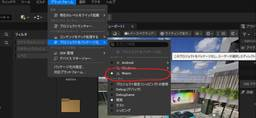

historia Inc – 株式会社ヒストリア
https://historia.co.jp
ゲームの企画・開発・制作協力の株式会社ヒストリアです。UE4やVRの最先端技術を使ってPlayStation®4などのコンシューマーゲームやアーケードゲーム、デジタルコンテンツを創出し、人生観を変えるような体験を提供します。
フィード

【UE5】UE5.9のWeb対応 実装編：Webブラウザで動かすためにやったこと
historia Inc – 株式会社ヒストリア
執筆バージョン: Unreal Engine 5.9 MegaJam Preview はじめに 前回の記事では、ヒストリア・エンタープライズの車載HMI技術デモ「historia HMI Realize」（以下、Real […]The post 【UE5】UE5.9のWeb対応 実装編：Webブラウザで動かすためにやったこと first appeared on historia Inc - 株式会社ヒストリア.
2日前

[UE5]EUWをPIEで利用する
historia Inc – 株式会社ヒストリア
執筆バージョン: Unreal Engine 5.8 こんにちは。 今回はEUW（Editor Utility Widget）をPIE（Play In Editor）中に利用する方法と、その際に役立つ情報を […]The post [UE5]EUWをPIEで利用する first appeared on historia Inc - 株式会社ヒストリア.
3日前

【UE5】ついにUnreal Engine 5がWebブラウザで動く！UE5.9で試してみた
historia Inc – 株式会社ヒストリア
執筆バージョン: Unreal Engine 5.9 MegaJam Preview はじめに UE5.9で、Webプラットフォーム(WebAssembly + WebGPU)向けのパッケージ化ができるようになりました。 […]The post 【UE5】ついにUnreal Engine 5がWebブラウザで動く！UE5.9で試してみた first appeared on historia Inc - 株式会社ヒストリア.
3日前

[UE5]Niagaraで作る！かわいいキラキラ・トレールエフェクトの作り方
historia Inc – 株式会社ヒストリア
執筆バージョン: Unreal Engine 5.4 今回は Unreal Engine の Niagara を使って、移動に合わせてパーティクルが舞う「かわいいトレールエフェクト」を作成します。 基本の軌 […]The post [UE5]Niagaraで作る！かわいいキラキラ・トレールエフェクトの作り方 first appeared on historia Inc - 株式会社ヒストリア.
8日前
[UE5]物を掴んだり離したりしてみよう
historia Inc – 株式会社ヒストリア
執筆バージョン: Unreal Engine 5.8 今回は、物を掴んだり離したりする挙動をブループリントで簡易的に実装してみましょう！ それだけでは味気ないので、最後には掴んだものを台座にはめ込むようなギミックを作って […]The post [UE5]物を掴んだり離したりしてみよう first appeared on historia Inc - 株式会社ヒストリア.
10日前
[UE5]UE5.8で追加されたSandboxを触ってみよう
historia Inc – 株式会社ヒストリア
執筆バージョン: Unreal Engine 5.8 はじめに こんにちは！UE5.8で追加された「Sandbox」機能をご存知ですか？(※執筆時点ではExperimentalです) Sandboxはプロジェクトから独立 […]The post [UE5]UE5.8で追加されたSandboxを触ってみよう first appeared on historia Inc - 株式会社ヒストリア.
17日前
［UE5］後から調整できるマテリアル設計のすすめ
historia Inc – 株式会社ヒストリア
執筆バージョン: Unreal Engine 5.5 みなさんこんにちは。 今回はマテリアルパラメータを活用した、後から調整しやすいマテリアル設計の一例をご紹介します。 参考例はこちら。 こちらのカラフルな猫ちゃんで […]The post ［UE5］後から調整できるマテリアル設計のすすめ first appeared on historia Inc - 株式会社ヒストリア.
24日前
【UE5】機材費5.6万円で Unreal Engine × フィジカルAI を試してみた
historia Inc – 株式会社ヒストリア
執筆バージョン: Unreal Engine 5.8 はじめに 今回は、Unreal Engine（UE）を使って、ロボットアームに物をつかむ動作を学習させる実験をしてみました。 近年注目されている「フィジカルAI」は、 […]The post 【UE5】機材費5.6万円で Unreal Engine × フィジカルAI を試してみた first appeared on historia Inc - 株式会社ヒストリア.
25日前
【予告】12月18日(金) 「UE5ぷちコン 映像編8th」開催決定！ Unreal Engineの学習向け作品コンテスト
historia Inc – 株式会社ヒストリア
２、３日でサクッと作ってサクッと応募！ “UE5ぷちコン 映像編8th”開催決定！ 開催期間： 2026年12月18日(金)～2027年1月11日(月・祝)(1月12日(火)AM10:00)まで！ […]The post 【予告】12月18日(金) 「UE5ぷちコン 映像編8th」開催決定！ Unreal Engineの学習向け作品コンテスト first appeared on historia Inc - 株式会社ヒストリア.
1ヶ月前
設立13周年を迎えました！
historia Inc – 株式会社ヒストリア
ヒストリア代表の佐々木です。 ヒストリアは2026年10月31日にめでたく13周年を迎えました！ クライアントのみなさま、弊社商品をDLや購入いただいたみなさま、各パートナー企業のみなさま、コミュニティのみ […]The post 設立13周年を迎えました！ first appeared on historia Inc - 株式会社ヒストリア.
1ヶ月前